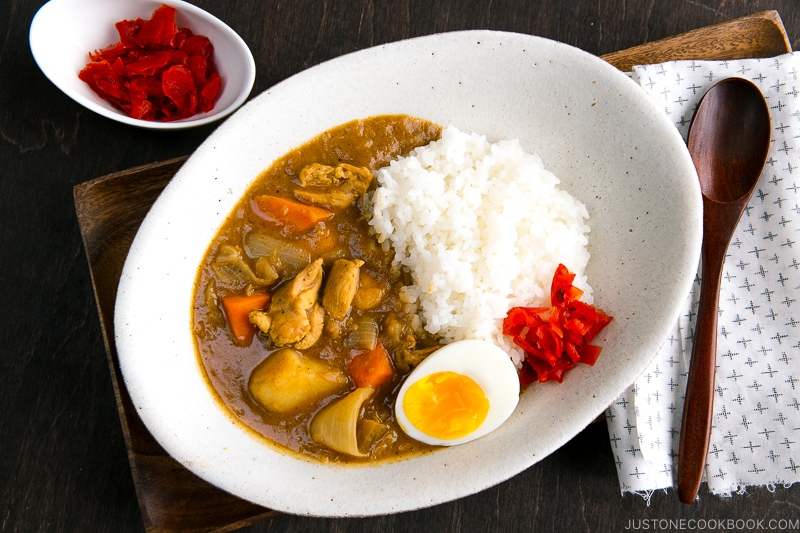

Japanese Chicken Curry

What is Japanese Chicken Curry?
Japanese chicken curry is a favorite dish during a night out or when you're eating dinner at home with your family. This dish is made up of tender pieces of chicken, carrots, and potatoes cooked in a rich savory curry sauce, this Japanese version of curry is a must keep for your family meal.
Ingredients
- 1 1/2 boneless, skinless chicken thighs
- kosher/sea salt
- freshly ground black pepper
- 2 carrots
- 2 onions
- 1-2 russet potatoes
- 1/2 Tbsp ginger
- 2 cloves garlic
- 1 1/2 Tbsp neutral-flavored oil (vegetable, rice bran, canola, etc.)
- 4 cups of chicken stock/broth
- 1 apple
- 1 Tbsp honey
- 1/2 tsp kosher/sea salt
- 1 package Japanese curry roux
- 1 1/2 Tbsp soy sauce
- 1 Tbsp ketchup
- soft/hard boiled egg
- furkujinzuke (red pickled daikon)
How to Prepare Japanese Chicken Curry
- Gather all the ingredients
- Discard the extra fat from the chicken and cut it into bite size pieces. Season with a little bit of salt and pepper.
- Peel and cut the carrot in rolling wedges (Rangiri) and cut the onions in wedges.
- Cut the potatoes into 1 ½ inch (4 cm) pieces and soak in water for 15 minutes to remove excess starch.
- Grate the ginger and crush the garlic.
- Heat the oil in a large pot over medium heat and sauté the onions until they become translucent and tender.
- Add the ginger and garlic.
- Add the chicken and cook until it's no longer pink.
- Add the carrot and mix well to coat with oil.
- Add the chicken broth and bring it to a boil. Chicken broth contains a different amount of salt. If you're careful with sodium intake or not sure if your chicken stock is too salty, you can use water only, or use half stock + half water. You can always add salt at the end of cooking.
- Once boiling, using a fine-mesh strainer, skim the scrum and fat from the surface of the broth.
- Peel the apple and grate it (use as much as you like to add sweetness). I've been using this grater and love it.
- Add the honey and salt and simmer uncovered for 20 minutes, stirring occasionally.
- Add the potatoes and cook until the potatoes are tender, about 15 minutes.
- Turn off the heat. If you use the store-bought curry roux, put 1-2 blocks of roux in a ladle and slowly let it dissolve with a spoon or chopsticks. Continue with the rest of the blocks.
- If you're using homemade curry roux, scoop a ladleful or two of cooking liquid from the curry broth and add it into the curry paste in a saucepan. Add more cooking liquid if necessary and mix well until it’s smooth.
- Add the roux mixture back into the soup and stir to combine.
- Add soy sauce and ketchup (and any other condiments you're adding – see the blog post). Simmer uncovered on low heat, stirring occasionally, until the curry becomes thick.
- Serve the curry with Japanese rice on the side. If you like, garnish with soft-boiled egg and fukujinzuke.
Go to Top of Page
Back to Homepage